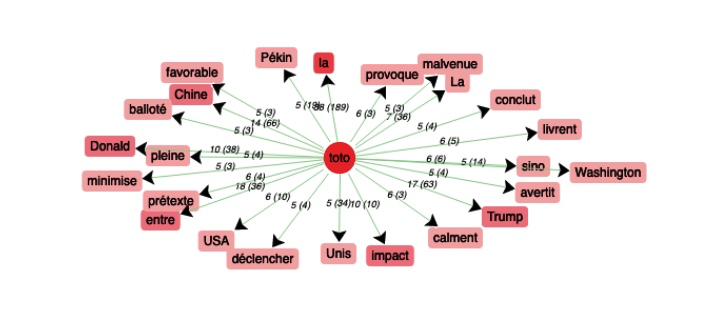

Intelligence Artificielle
Analyse
Notre analyse portant sur le corpus français prend en compte les termes “intelligenceartificielle” et “ia”. Les calculs de cooccurrences ont été réalisés en utilisant une fenêtre contextuelle de 10 termes autour du mot-clé. Les mots accompagnés de deux étoiles** proviennent de l'analyse effectuée avec le terme "intelligenceartificielle", alors que les termes suivis d'une étoile* sont issus de l'analyse avec le terme "ia". Dans l’analyse qui suit nous allons voir que notre discours sur l’IA a de nombreuses facettes.
Premièrement, le lexique lié à la technologie est très étendu. Il comprend les mots : systèmes* (IndSP=23) techno** (IndSP=7), moderne** (IndSP=6), système* (IndSP=6), ingénieur** (IndSP=6), chercheurs** (IndSP=5), logiciels** (IndSP=5), techno* (IndSP=5).
Deuxièmement, on observe la prédominance d’un champ lexical plutôt négatif associé à l'IA. Des mots tel que : démence** (IndSP=14), harcèlement* (IndSP=11), catastrophe** (IndSP=8), attaque* (IndSP=8), problématique** (IndSP=6), deepfakes* (IndSP=6), marginalise** (IndSP=5), menaces** (IndSP=5). A contrario peu de termes positifs vont de paire avec l’intelligence artificielle, il s’agit seulement de : championne* (IndSP=11), amicale** (IndSP=7), beauté* (IndSP=8).
Troisièmement, on note un vaste champ lexical associé à la régulation. Champ lexical de la régulation : sûreté* (IndSP=15), débat** (IndSP=10), juge* (IndSP=8), réglementation* (IndSP=6) réguler** (IndSP=5), encadrer* (IndSP=5).
Quatrièmement, on remarque tout un vocabulaire exprimant le potentiel de l’IA. On retrouve les termes tel que : imaginer** (IndSP=10), traque* (IndSP=10), dépiste** (IndSP=8), changer** (IndSP=7), engendre** (IndSP=7), capable** (IndSP=6), agir** (IndSP=6), découvre** (IndSP=5), forte** (IndSP=5).
Enfin, trois secteurs d'activités semblent être concernés par le développement de l’intelligence artificielle. Nous avons relevé : éducation* (IndSP=9), voiture** (IndSP=7), santé** (IndSP=6).
Nous avons été surpris de constater qu’aucun logiciel connu du grand public ne figure parmi les cooccurrences de “intelligenceartificielle” ou “ia”. Deux logiciels sont néanmoins cités l’un étant roadio** (IndSP=5) qui est système anticollision pour véhicule et l’autre étant athénan* (IndSP=10) qui est une IA dédiée aux jeux de société. Notre discours sur l’intelligence artificielle pourrait être résumé trivialement de la manière suivante : l’IA est une technologie envers laquelle nous exprimons une certaine défiance. Cependant, nous cherchons à établir des régulations en espérant exploiter son plein potentiel notamment dans les domaines de l'éducation, de l’automobile et de la santé.
itrameur : ia
itrameur : intelligenceartificielle
Nuage de mots
Artificial Intelligence
Analyse
Sur la cinquantaine de pages web en anglais que nous avons sélectionnées pour notre étude, nous avons observé plusieurs tendances.
Une observation que nous avons jugée intéressante est le fait que le mot “artificial intelligence” ou son acronyme “AI” était très souvent en coprésence du mot “ethics” (IndSP=11). En effet, dans ces pages web, l’intelligence artificielle pose de nombreuses questions éthiques au regard de l’intelligence humaine. On peut également relever les cooccurrents “impact” (IndSP=7), “role” (IndSP=5), “risks” (IndSP=5) et “hiring” (IndSP=5). Cette récurrence révèle les interrogations et les craintes que peut inspirer l'impact de cette évolution technologique et de son rôle dans la société : l’intelligence artificielle est-elle meilleure que l’intelligence humaine ? Est-elle capable de remplacer l’humain dans ses capacités intellectuelles, notamment sur le marché du travail ?
Néanmoins, malgré ces appréhensions, l’intelligence artificielle semble aussi et surtout être envisagée comme un nouvel outil bénéfique et ainsi constituer un défi à relever, puisque l’on peut observer les cooccurrents suivants : “future” (IndSP=36), “social” (IndSP=21), “benefits” (IndSP=10), “society” (IndSP=9), “advantages” (IndSP=5), et “innovation” (IndSP=5). La question ne tourne dans ce cas plus autour du risque de l’intelligence artificielle pour l’homme, mais autour de comment apprendre à en faire notre allié.
On peut également relever un certain nombre de domaines associés, tels que “researchers” (IndSP=9), “education” (IndSP=7), “business” (IndSP=6), “developing” (IndSP=6) ou “sports” (IndSP=5), qui montre que l’intelligence artificielle est utilisée ou peut être utilisée dans divers contextes et objectifs, ce qui révèle l’étendue importante et croissante de cette technologie.
Il semble donc, à travers l’analyse de ses cooccurrents dans nos pages web en anglais, que l’intelligence artificielle ait une image controversée entre danger potentiel pour l’humain et outil ouvrant la voie à des progrès significatifs pour de nombreux domaines.
itrameur : artificialintelligence
Nuage de mots
人工智能
Analyse
Selon le tableau, les mots co-occurrents les plus pertinents sont :
- 发展 développement / développer (omniprésent)
- 强 fort (omniprésent)
- 弱 faible (omniprésent)
- 技术 technologie (IndSP=46)
- 代 génération (IndSP=43)
- 领域 domaine (IndSP=39)
- 应用 application / appliquer (IndSP=39)
- 我国 État (IndSP=35)
- 治理 gouvernance / gouverner (IndSP=24)
- 定义 définition / définir (IndSP=24)
- 创新 innovation / innover (IndSP=23)
L’IA est sans doute une technologie (技术) assez récente et puissante qui apporte de nombreux bienfaits dans différents secteurs d'activités (行业) comme l’industries (产业) ou les disciplines académiques (学科). En fonction de la plupart des articles recueillis, les bienfaits se manifestent surtout en termes d’efficacité, de rapidité et de libération de main-d’œuvre.
L’IA est vu comme vecteur de l’innovation (创新) accentuant de plus en plus son impact sur les marchés.
Les diverses applications de l’IA transparaissent parmi les mots co-occurrents. Ainsi se dégage quatre axes : la gouvernance (治理), la sécurité (安全), la norme d’utilisation (规范) et la mise en place (布局). Concrètement, la gouvernance des outils d’IA a pour but d’éviter leur abus au cas où ils seraient employés pour de mauvaises intentions. La sécurité évoque la fameuse controverse à propos de la sûreté des outils d'intelligence artificielle pour l'Homme. La norme d’utilisation poursuit la polémique précédente, et approfondit sur comment élaborer une norme pertinente afin d’éviter de potentiels inconvénients. Enfin, la mise en place met l’attention sur la promotion de l’application des outils.
En plus des applications, le corpus traite également le côté théorique du développement de l’IA. Tout d’abord, il introduit les système d’architecture (系统) d’IA, qui est une notion très courante dans les théories d’IA. Puis, l’autre terme co-occurrent est la recherche universitaire ou scientifique (研究), qui illustre l’importance accordée à l’IA dans le domaine de la recherche actuel. Dernièrement, des problèmes éthiques sont mentionnés. Ces problèmes sont surtout liés à l’utilisation des outils d’IA et sa normalisation. Dans le corpus chinois, le terme 人工智能 (IA) est surtout lié au développement (发展) des outils d’intelligence artificielle (IA).
itrameur : 人工智能
Nuage de mots